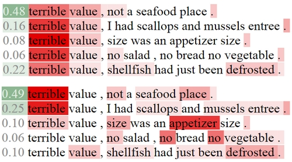
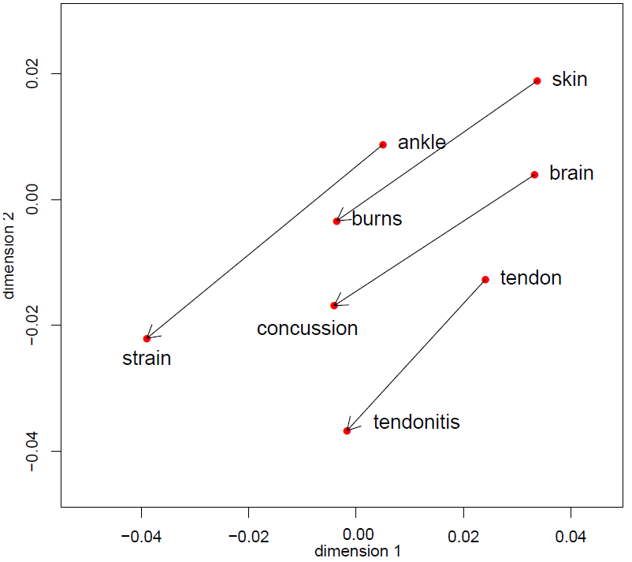

News
- BARThez was accepted as a long paper at EMNLP 2021!
- I accepted the invitation to serve on the Program Committee Board of the International Joint Conference on Artificial Intelligence (IJCAI) for a period of three years!
- Our pretrained seq2seq model BARThez is on arXiv, GitHub, and HuggingFace, and our extreme summarization dataset OrangeSum is on GitHub and HuggingFace!
- Long paper accepted at EACL 2021!
- I accepted the invitation to become a Senior Program Committee (SPC) member for IJCAI 2021!
- I will review for NAACL-HLT 2021!
- Long paper accepted at COLING 2020, with two oral recommendations!
- Long paper accepted at AACL-IJCNLP 2020! (28.3% acceptance rate)
- I will review for EMNLP 2020!
- Two new NLP preprints on arXiv! (paper 1 - polysemy quantification) (paper 2 - dialogue act classification)
- Two papers accepted in Automation in Construction (25% acceptance rate)! (paper 1) (paper 2)
- I will review for ACL 2020!
- Our paper Message Passing Attention Network for Document Understanding was accepted at AAAI 2020! (20.6% acceptance rate) (code here)
- Like last year, I will be part of the committee of the TextGraphs workshop at EMNLP!
- Our paper on how to perform graph classification with 2D Convolutional Neural Networks was accepted for oral presentation at ICANN 2019! (24% acceptance rate) (code here)
- Our paper on perturbing and combining graphs for influential spreader detection has been accepted for oral presentation at ASONAM 2019! (14% acceptance rate) (slides here)
- Our Kernel Graph CNN paper was accepted as a long paper at ICANN 2018!
- Our paper on unsupervised meeting summarization was accepted as a long paper at ACL 2018! (25% acceptance rate) (code here)
About - CV - Contact
I co-founded SafetyAI in April 2020 with my former PhD advisor Matt Hallowell. Our goal is to develop state-of-the-art artificial intelligence solutions to construction safety challenges. We do mainly NLP (NER, information retrieval and extraction, summarization), computer vision (object detection, image classification, image search), and predictive modeling, graph mining, and risk analysis. I am in charge of the entire R&D process, from conducting research, running experiments, and writing papers, to developing scripts, desktop and mobile applications (UI & server), and APIs.From November 2015 to March 2020, I was a postdoc in the Data Science and Mining team (DaSciM) of Michalis Vazirgiannis, within the Computer Science Laboratory (LIX) of École Polytechnique, in Palaiseau, France.
My interests overspan all aspects of Artificial Intelligence, Deep Learning and applied Machine Learning. I am interested in the relationship between graphs and text. Indeed, graphs can be represented as documents, and documents can be represented as graphs, so methods from graph theory can be applied to NLP and inversely. I am also very much interested in deep learning applications to NLP. I have worked on representation learning (especially, attention mechanisms), but I am also interested in more complex applications such as abstractive summarization, neural machine translation, text generation, and multi-modal approaches (image/text).
I received my PhD from the University of Colorado at Boulder in the Spring of 2015, under the supervision of Matt Hallowell (primary advisor) and Balaji Rajagopalan. I applied NLP, predictive modeling and probability theory to raw textual injury reports, in order to better understand and forecast construction injuries. My work was funded by the NSF and major American construction companies. Before that, I obtained a MS in Construction Engineering & Management (CU Boulder 2013) and a MS in Electrical & Mechanical Engineering (ESTP Paris 2011).
Here is my CV. You can contact me at
Publications
Preprints
- 
- 
Conferences
Journals
Dissertation and Thesis
Demos
I developed the interactive web apps below to illustrate my research, or just for fun:

Presentations and Posters
Other works
Fun stuff
I love music. I was born and raised listening to the following albums (vinyl for the first seven):
Graceland (Paul Simon),
the Concert in Central Park (Simon & Garfunkel),
Hotter than July (Stevie Wonder),
Time (Electric Light Orchestra),
Thriller (MJ),
Hotel California (Eagles),
Breakfast in America (Supertramp),
Gold: Greatest Hits (ABBA),
Bad to the Bone (Inner Circle),
and 1962-1966 (the Beatles).
In French, I like very much
Michel Berger & France Gall,
Jean-Jacques Goldman,
Francis Cabrel,
Johnny Hallyday,
Joe Dassin ,
Serge Gainsbourg,
George Brassens,
Jean Ferrat,
Charles Aznavour,
Barbara,
Moustaki,
Charles Trenet,
Michel Delpech,
Daniel Balavoine,
and the musicals Starmania,
Notre-Dame de Paris and
Les Dix Commandements.
Listening to
Metallica,
Tryo,
Avril Lavigne,
The Calling,
Yannick,
Staind,
Nickelback,
Rohff,
Vanessa Carlton,
Eminem,
Nuttea,
New Found Glory,
Lene Marlin,
Kyo, or
One-T + Cool-T
takes me back to the sweet 1990s - early 2000s and makes me nostalgic.
Some songs I like to hum:
[1],
[2],
[3],
[4],
[5],
[6],
[7],
[8],
[9],
[10],
[11],
[12],
[13],
[14],
[15],
[16],
[17],
[18],
[19].
I love playing and watching tennis. I am a huge fan of Roger, Rafa, Fabrice Santoro, Michael Llodra, and the Williams sisters. I also enjoy watching new spectacular players like Denis Shapovalov and Stefanos Tsitsipas, and some Frenchmen, like Gael Monfils and Richard Gasquet.
In French, I like very much Michel Berger & France Gall, Jean-Jacques Goldman, Francis Cabrel, Johnny Hallyday, Joe Dassin , Serge Gainsbourg, George Brassens, Jean Ferrat, Charles Aznavour, Barbara, Moustaki, Charles Trenet, Michel Delpech, Daniel Balavoine, and the musicals Starmania, Notre-Dame de Paris and Les Dix Commandements.
Listening to Metallica, Tryo, Avril Lavigne, The Calling, Yannick, Staind, Nickelback, Rohff, Vanessa Carlton, Eminem, Nuttea, New Found Glory, Lene Marlin, Kyo, or One-T + Cool-T takes me back to the sweet 1990s - early 2000s and makes me nostalgic. Some songs I like to hum: [1], [2], [3], [4], [5], [6], [7], [8], [9], [10], [11], [12], [13], [14], [15], [16], [17], [18], [19].
I love playing and watching tennis. I am a huge fan of Roger, Rafa, Fabrice Santoro, Michael Llodra, and the Williams sisters. I also enjoy watching new spectacular players like Denis Shapovalov and Stefanos Tsitsipas, and some Frenchmen, like Gael Monfils and Richard Gasquet.
Collaborators
I learned a lot from collaborating with the great persons listed below (in chronological order). Thanks to all of them!Matt Hallowell (CU Boulder), Alex Albert (NC State), Leaf Van Boven (CU Boulder), Balaji Rajagopalan (CU Boulder), Michalis Vazirgiannis (École Polytechnique), Konstantinos Skianis (École Polytechnique), Fragkiskos D. Malliaros (UC San Diego), Polykarpos Meladianos (AUEB), Giannis Nikolentzos (AUEB), Maria Rossi (École Polytechnique), Jesse Read (École Polytechnique), and Jean-Baptiste Remy.